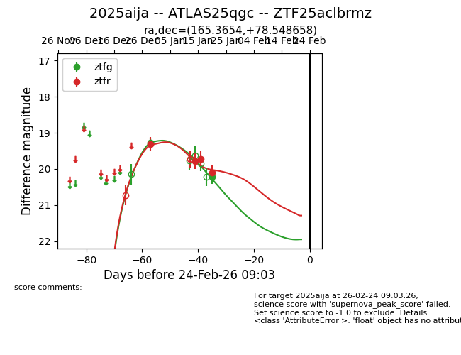
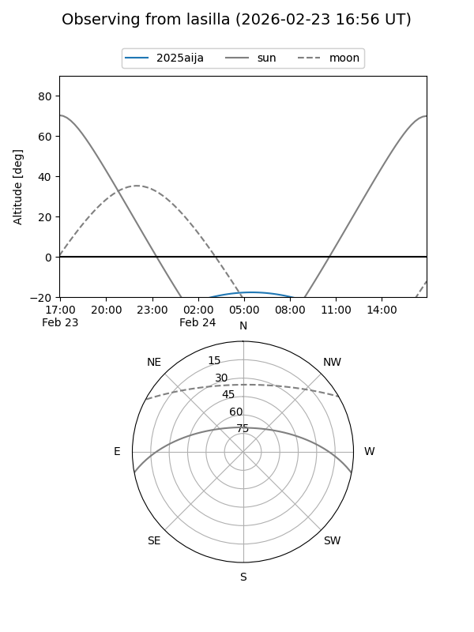
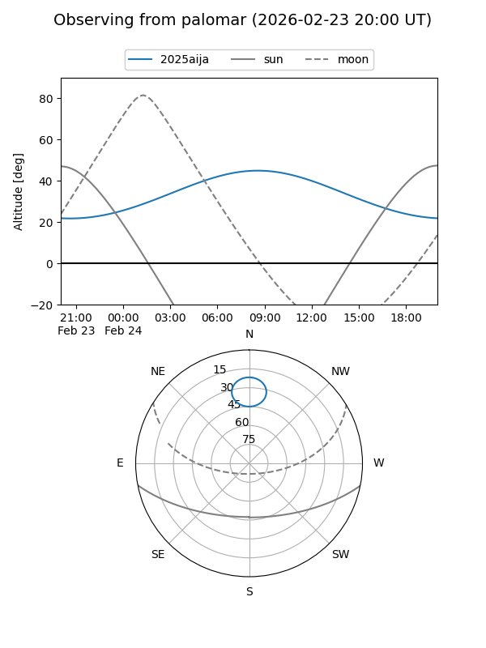

2025aija
Target 2025aija at 2025-12-31 17:00
Aliases and brokers:
FINK:
Lasair:
ALeRCE:
TNS:
YSE:
alt names
ZTF25aclbrmz (ztf,fink_ztf)
2025aija (tns,yse)
ATLAS25qgc (atlas)
Coordinates:
equatorial (ra, dec) = 165.3654,+78.54866
equatorial (HMS+DMS) = 11:01:27.69,+78:32:55.17
galactic (l, b) = (129.5335,+37.13140)
Flags:
Photometry:
last ztfg=19.28, ztfr=19.31
1 ztfg, 1 ztfr detections
Lightcurve

Visibility


Additional plots